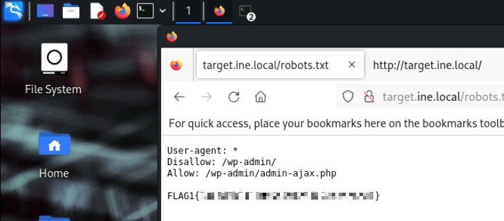
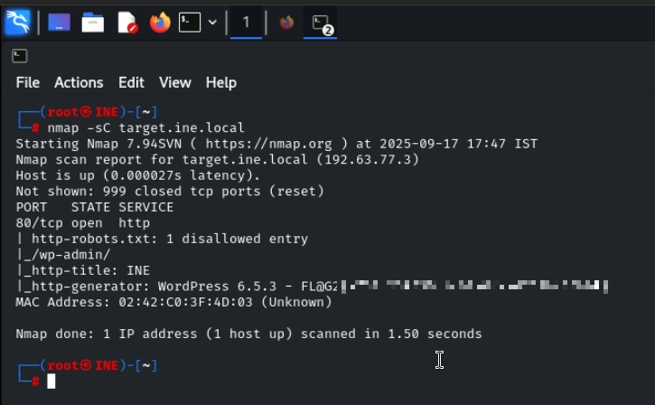
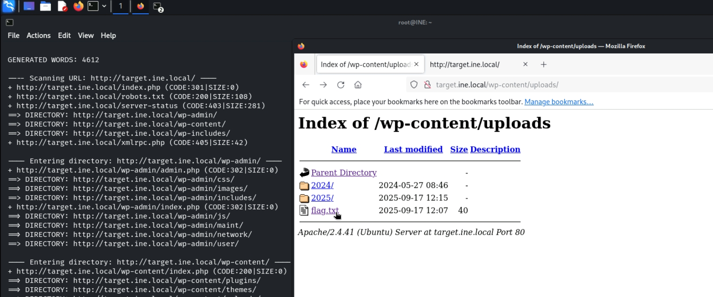

Guías de Resolución de Máquinas
Assessment Methodologies: Information Gathering CTF 1
Esta es la primera máquina que hago del INE. Se corresponde con la recolección de información, un paso muy importante antes de comenzar con el pentesting. Es lógico que debemos saber dónde atacar y para ello, hace falta tener conocimiento de todo lo que hay. Esta máquina, como el resto de las del INE, sugieren lo que hay que buscar, pero no es una palabra o un concepto, sino que hay que encontrar la FLAG. Comencemos:
La primera pregunta dice lo siguiente: "This tells search engines what to and what not to avoid." Lo que hay que hacer es buscar dentro del "robots.txt", que es lo que le dice a los buscadores qué pueden mirar y qué no. Entrando en este archivo obtendremos la primera FLAG.
Para la segunda pregunta, nos piden lo siguiente: What website is running on the target, and what is its version?Esto lo podemos saber usando el comndo nmap de la siguiente forma:
NOTA: Otra opción quizás más sencilla sería con el comando 'whatweb'
Pasamos con la tercera flag: Directory browsing might reveal where files are stored.
Aquí tocamos un comando muy interesante que se llama 'dirb'. Con él podemos enumerar los subdominios en busca de qué podría ser interesante de ver. Sería algo así:
dirb target.ine.local

Una vez que ejecutamos el comando, miramos en varios subdominios hasta ver uno muy interesante que es el de 'uploads'. Al entar en dicha parte, vemos lo que estamos buscando,que es la tercera flag.
